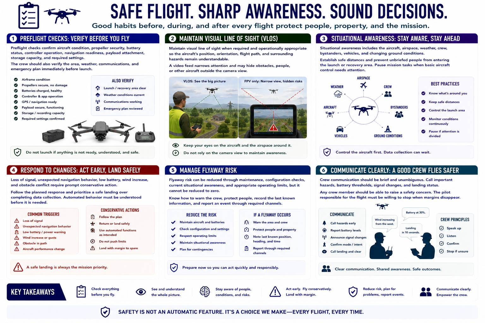

Flight Safety and Risk Management
Connecting to LMS... Progress: in progress

Narration
Preflight checks confirm aircraft condition, propeller security, battery status, controller operation, navigation readiness, payload attachment, storage capacity, and required settings. The crew should also verify the area, weather, communications, and emergency plan immediately before launch.
Maintain visual line of sight when required and operationally appropriate so the aircraft's position, orientation, flight path, and surrounding hazards remain understandable. A video feed narrows attention and may hide obstacles, people, or other aircraft outside the camera view.
Situational awareness includes the aircraft, airspace, weather, crew, bystanders, vehicles, and changing ground conditions. Establish safe distances and prevent unbriefed people from entering the launch or recovery area. Pause mission tasks when basic aircraft control needs attention.
Loss of signal, unexpected navigation behavior, low battery, wind increase, and obstacle conflict require prompt conservative action. Follow the planned response and prioritize a safe landing over completing data collection. Automated behavior must be understood before it is needed.
Flyaway risk can be reduced through maintenance, configuration checks, current situational awareness, and appropriate operating limits, but it cannot be reduced to zero. Know how to warn the crew, protect people, record the last known information, and report an event through required channels.
Crew communication should be brief and unambiguous. Call important hazards, battery thresholds, signal changes, and landing status. Any crew member should be able to raise a safety concern. The pilot responsible for the flight must be willing to stop when margins disappear.